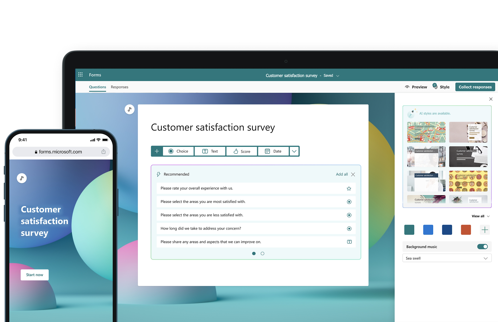

Microsoft Forms 介紹
Microsoft Forms 是一個網頁應用程式，允許用戶創建和分享線上問卷、測驗、投票和表單。它可以幫助您收集反饋、測量滿意度、測試知識等。

如何使用 Microsoft Forms？
- 創建表單：進入 Microsoft Forms，點擊“新建表單”開始創建。
- 設計表單：使用各種問題類型、主題和分支邏輯來設計您的表單。
- 分享表單：完成表單後，您可以生成一個網址，並將其分享給內部或外部人員填寫。

對外發放表單
Microsoft Forms 支持將表單分享給外部人員填寫。您可以選擇“任何人都可以回應”選項，這樣即使是非組織內部的人員也可以填寫您的表單。
使用 Copilot 提升效率
利用 Microsoft Forms 的 Copilot 功能，您可以更高效地創建表單。以下是一些 Copilot 的優點：
- 自動生成表單：Copilot 可以根據您的提示自動生成表單內容，節省您的時間。
- 多語言支持：Copilot 支持多種語言，您可以使用英文或中文進行提示。
- 智能修正：Copilot 會根據您的反饋進行智能修正，更新表單，確保表單內容的準確性。
表單設計操作範例
範例一：客戶滿意度調查表單
- 進入 Microsoft Forms，點擊“新建表單”。
- 在標題中輸入“客戶滿意度調查”。
- 添加問題：
- 選擇“選擇題”，輸入問題“您對我們的服務滿意嗎？”，選項包括“非常滿意”、“滿意”、“一般”、“不滿意”、“非常不滿意”。
- 選擇“評分”，輸入問題“請為我們的服務打分（1-5分）”。
- 選擇“文字”，輸入問題“請提供您的建議或意見”。
- 點擊“分享”，選擇“任何人都可以回應”，生成鏈接並分享。

範例二：活動報名表單
- 進入 Microsoft Forms，點擊“新建表單”。
- 在標題中輸入“活動報名表”。
- 添加問題：
- 選擇“文字”，輸入問題“請輸入您的姓名”。
- 選擇“文字”，輸入問題“請輸入您的聯絡電話”。
- 選擇“日期”，輸入問題“請選擇參加日期”。
- 點擊“分享”，選擇“任何人都可以回應”，生成鏈接並分享。

希望這些範例能幫助您更好地使用 Microsoft Forms。